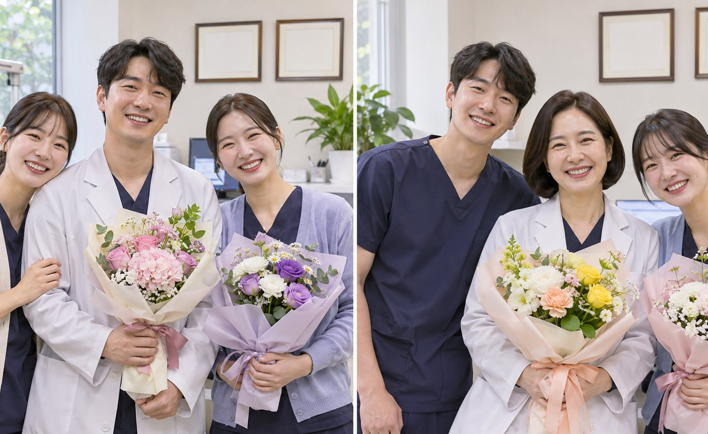

오랜 기간 진료 현장과 함께한 직원들의 노고를 기리는 자리를 마련했습니다
2026.08.01
안녕하세요! 여유로운 여름휴가와 막바지 방학으로 마음이 두근거리는 8월입니다.
소중한 분들과 떠나는 길마다 맑고 예쁜 풍경만 담으시길 바라며,
오늘도 서울시원안과의 따뜻한 소식을 전해 드립니다.
8월 1일, 서울시원안과가 걸어온 길을 묵묵히, 그리고 든든하게 함께해 준
10년 장기근속자분들을 위한 뜻깊은 자리가 마련되었습니다.
월례 조회와 함께 진행해 더 많은 식구들이 다 같이 축하할 수 있었습니다.
저희 병원이 지금처럼 자라고 깊은 노하우를 쌓을 수 있었던 건,
지난 10년이라는 긴 시간 동안 마음을 다해 일해 준 장기근속 직원분들 덕분입니다.
환자 한 분 한 분을 누구보다 잘 아는 베테랑 의료진과 직원이 늘 곁에 있기에,
언제 오셔도 한결같이 편안한 진료를 해 드릴 수 있었습니다.
이번 자리는 단순한 포상을 넘어서, 함께 쌓아 온 시간과 온기를 다 같이 느낀 정말 뭉클한 순간이었습니다.
오랜 세월 환자분들과 병원을 위해 묵묵히 애써 준 장기근속자분들께
감사와 존경의 마음을 듬뿍 담아 특별 금일봉과 축하 꽃다발을 전달해 드렸습니다.
늘 가까이서 함께 웃고 울며 호흡을 맞춰 온 동료들의 박수와 환호가 가득했습니다.
병원 전체가 하나의 따뜻한 가족 같다는 생각이 절로 드는 시간이었습니다.
직원이 오랜 시간 한자리에서 함께한다는 건, 그만큼 '환자분들을 향한 마음과 케어의 깊이'가
남다르다는 의미이기도 합니다. 10년 동안 쌓인 숙련된 노하우,
그리고 눈빛만 봐도 통하는 끈끈한 팀워크는 환자분들께 더 큰 안도감과 믿음을 드리는 든든한 힘이 됩니다.

얼굴을 기억하고 반갑게 안부를 묻는 익숙한 직원의 안내 덕분에,
많은 환자분들이 마음 편히 찾아 주시는 것 같습니다.
앞으로도 서울시원안과는 여러분의 눈 건강을 위해 변함없는 미소와 진심으로 함께하겠습니다.
지난 10년이라는 긴 시간 동안 변함없는 열정으로 함께해 주신
이선하 원장님, 정다온 총괄실장님! 진심으로 축하드리고 감사합니다.